Mac_Integrated_inspection
Sophie
2026-09-10
Last updated: 2026-10-13
Checks: 7 0
Knit directory: Integration/
This reproducible R Markdown analysis was created with workflowr (version 1.7.2). The Checks tab describes the reproducibility checks that were applied when the results were created. The Past versions tab lists the development history.
Great! Since the R Markdown file has been committed to the Git repository, you know the exact version of the code that produced these results.
Great job! The global environment was empty. Objects defined in the global environment can affect the analysis in your R Markdown file in unknown ways. For reproduciblity it’s best to always run the code in an empty environment.
The command set.seed(20260910) was run prior to running
the code in the R Markdown file. Setting a seed ensures that any results
that rely on randomness, e.g. subsampling or permutations, are
reproducible.
Great job! Recording the operating system, R version, and package versions is critical for reproducibility.
Nice! There were no cached chunks for this analysis, so you can be confident that you successfully produced the results during this run.
Great job! Using relative paths to the files within your workflowr project makes it easier to run your code on other machines.
Great! You are using Git for version control. Tracking code development and connecting the code version to the results is critical for reproducibility.
The results in this page were generated with repository version 022fa90. See the Past versions tab to see a history of the changes made to the R Markdown and HTML files.
Note that you need to be careful to ensure that all relevant files for
the analysis have been committed to Git prior to generating the results
(you can use wflow_publish or
wflow_git_commit). workflowr only checks the R Markdown
file, but you know if there are other scripts or data files that it
depends on. Below is the status of the Git repository when the results
were generated:
Ignored files:
Ignored: .Rhistory
Ignored: .Rproj.user/
Untracked files:
Untracked: analysis/Integratin_test.Rmd
Untracked: analysis/Integration3.Rmd
Untracked: analysis/core
Note that any generated files, e.g. HTML, png, CSS, etc., are not included in this status report because it is ok for generated content to have uncommitted changes.
These are the previous versions of the repository in which changes were
made to the R Markdown
(analysis/Mac_Integrated_inspection.Rmd) and HTML
(docs/Mac_Integrated_inspection.html) files. If you’ve
configured a remote Git repository (see ?wflow_git_remote),
click on the hyperlinks in the table below to view the files as they
were in that past version.
| File | Version | Author | Date | Message |
|---|---|---|---|---|
| Rmd | 022fa90 | Sophie | 2026-10-13 | update Integragion |
| html | f0d9695 | Sophie | 2026-09-23 | Build site. |
| Rmd | 630c800 | Sophie | 2026-09-23 | Update integration inspection analysis and index page |
| html | a091c41 | Sophie | 2026-09-15 | Build site. |
| html | eadda7e | Sophie | 2026-09-15 | Host with GitHub. |
| Rmd | 9da5847 | Sophie | 2026-09-10 | Integrated assay |
Setup
rm(list=ls())
gc() used (Mb) gc trigger (Mb) max used (Mb)
Ncells 903730 48.3 1746562 93.3 1315497 70.3
Vcells 1587923 12.2 8388608 64.0 2568097 19.6library(readr)
library(dplyr)
library(ggplot2)
library(Seurat)
library(hdf5r)
library(scCustomize)
library(patchwork)
library(cowplot)
library(ggrepel)
library(workflowr)
library(scDblFinder)
library(clustree)
library(harmony)
library(speckle)
library(MAST)
library(tibble)
library(EnhancedVolcano)
library(ggarchery)
library(ggtangle)
library(clusterProfiler)
library(org.Hs.eg.db)
library(GO.db)
library(DOSE)
library(fgsea)
library(forcats)
library(SCpubr)
library(assertthat)
library(UCell)
library(DT)
library(ggforce)
library(enrichplot)
library(ggrain)
library(ComplexHeatmap)
library(tidyverse)
library(circlize)
library(ggpubr)Import Rds
################### MT-Data
path <- "/shares/rheumatologie.usz/Sophie/Gabi_Projects/Data_Sets_Heart/Mac_Integrated3_MT_Derived_sample.rds"
macrophage_merged <- read_rds(path)
custom_palette <- colorRampPalette(c("#005EA8", "#6DB335", "#FFD966", "#EDAAD2", "#9F1C67"))
cols2 <- custom_palette(2)
cols3 <- custom_palette(3)
cols4 <- custom_palette(4)
cols5 <- custom_palette(5)
cols6 <- custom_palette(6)
cols8 <- custom_palette(8)
cols10 <- custom_palette(10)
cols39 <- custom_palette(39)Vizualisations
DimPlot(
macrophage_merged,
reduction = "umap",
group.by = "SCT_snn_res.0.2",
cols = cols8,
label = TRUE,
repel = TRUE,
shuffle = TRUE,
raster = FALSE,
pt.size = 0.1
) +
NoLegend() +
ggtitle("Combined Macrophages SCT_snn_res.0.2") +
theme(
axis.text = element_text(size = 8, face = "bold"),
axis.title = element_text(size = 12, face = "bold"),
plot.title = element_text(size = 14, face = "bold", hjust = 0.5)
)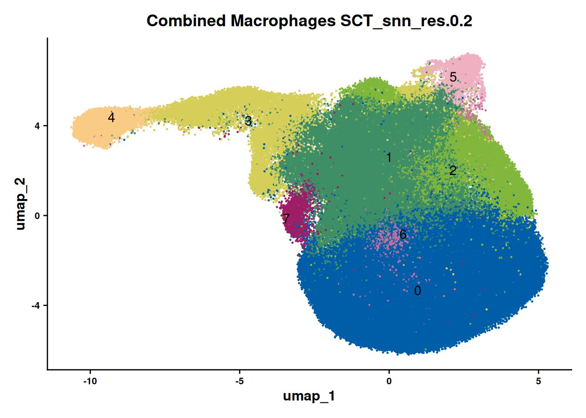
DimPlot(
macrophage_merged,
reduction = "umap",
group.by = "SCT_snn_res.0.3",
cols = cols10,
label = TRUE,
repel = TRUE,
shuffle = TRUE,
raster = FALSE,
pt.size = 0.1
) +
NoLegend() +
ggtitle("Combined Macrophages SCT_snn_res.0.3") +
theme(
axis.text = element_text(size = 8, face = "bold"),
axis.title = element_text(size = 12, face = "bold"),
plot.title = element_text(size = 14, face = "bold", hjust = 0.5)
)
Idents(macrophage_merged) <- "SCT_snn_res.0.2"Now we can check whether out MT Macs are distributed differentlyl across conditions
- visually we can identify a decrease in cluster 0 in TGF_B condition
DimPlot(
macrophage_merged,
reduction = "umap",
group.by = "SCT_snn_res.0.2",
split.by = "condition",
cols = cols8,
label = TRUE,
repel = TRUE,
shuffle = TRUE,
raster = FALSE,
pt.size = 0.1
) +
NoLegend() +
ggtitle("Combined Macrophages SCT_snn_res.0.2") +
theme(
axis.text = element_text(size = 8, face = "bold"),
axis.title = element_text(size = 12, face = "bold"),
plot.title = element_text(size = 14, face = "bold", hjust = 0.5)
)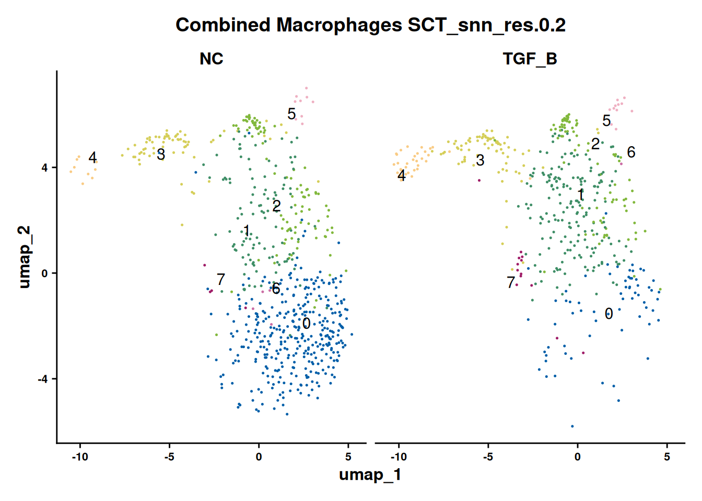
Proportions
cellCounts2 <- table(Celltype = macrophage_merged$SCT_snn_res.0.2, sample = macrophage_merged$Dataset)
cellPerc <- sweep(cellCounts2, 2, colSums(cellCounts2), "/")
p1 <- ggplot(data = as.data.frame(cellPerc), aes(x = sample, fill = Celltype, y = Freq)) +
geom_bar(stat = "identity") +
theme_bw() +
scale_fill_manual(values = cols8) +
theme(axis.text.x = element_text(angle = 45, hjust = 1),
plot.title = element_text(face = "bold", size = 15)) +
labs(title = "Cluster Proportions across Datasets", x = "", y = "fraction of cells")
p1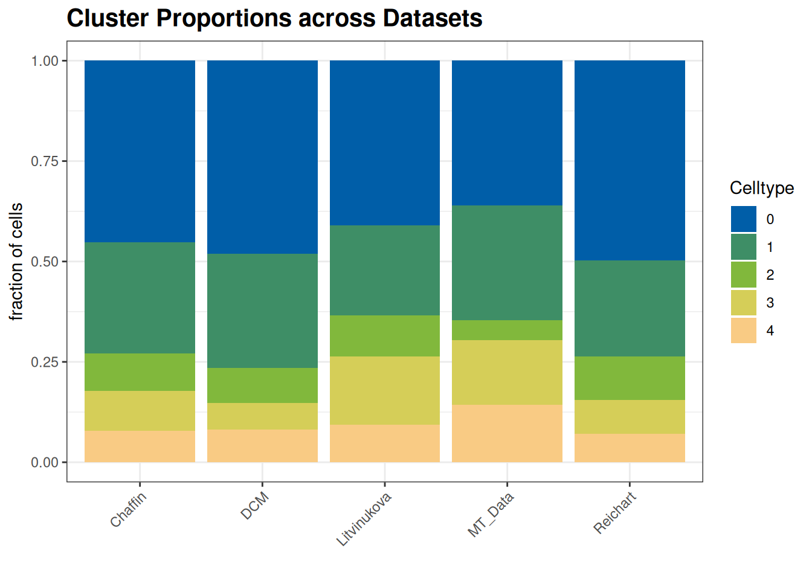
To which cluster do our MT-Mac distribute to?
- Labeling to Cluster 0 is much higher in NC compared to TGF-B
- Labeling to Cluster 1 is much higher in TGF-B compared to NC
- Is there a shift in cell identity?
# cluster overlap between MT conditions and reference cell states
table(macrophage_merged$SCT_snn_res.0.2, macrophage_merged$cell_states)
CD14+Mo CD16+Mo DOCK4+MØ1 DOCK4+MØ2 IL17RA+Mo LYVE1+MØ1 LYVE1+MØ2 LYVE1+MØ3
0 47 204 700 451 0 1160 796 700
1 94 327 1071 271 3 123 107 133
2 3 45 585 107 1 48 154 67
3 5 30 178 68 2 34 104 28
4 36 74 244 402 24 48 45 27
Macrophages Mast Mast_Cells MØ_AgP MO_CD16+ MØ_mod Mo_pi MO_VCAN+
0 15468 3 9 78 25 109 50 60
1 8495 20 5 34 1002 9 160 2749
2 2758 2 0 7 21 9 38 113
3 952 1270 1325 12 2 4 48 27
4 2705 1 2 19 8 1 59 140
Monocytes MP_FOLR2 MP_ISG MP_LYVE1hi/MHCII_intermediate MP_LYVE1hi/MHCII_lo
0 10 1556 1428 4172 14634
1 776 762 281 944 601
2 2 437 198 200 1221
3 10 146 41 160 428
4 6 172 103 199 291
MP_LYVE1lo/MHCII_hi MP_NFkB MP_OSM MP_transitional MP_TREM2+ MP-B_cell
0 2321 167 2618 1176 304 78
1 2615 73 267 1018 2485 282
2 830 48 295 372 193 106
3 297 16 87 39 73 223
4 1032 150 794 73 983 34
MP-FGF13 MP-GCH1 MP-Non-macrophage MP-ProlifMP MP-TPRG1 MY0 NA NØ
0 24309 79 762 745 1317 2373 26 1
1 2575 1244 516 514 11657 1862 12 0
2 3138 61 336 297 1666 2246 2 0
3 365 9 461 264 281 3617 4423 0
4 1806 39 186 113 2528 400 2 1
prolif_Myeloids unclassified.MP1 unclassified.MP2 unclassified.MP3
0 269 388 139 168
1 242 174 123 74
2 188 314 239 46
3 153 85 56 137
4 66 47 36 34# Extract metadata for the MT dataset only
mt_meta <- macrophage_merged@meta.data %>%
filter(Dataset == "MT_Data")
# 3. Plot cluster distribution: Untreated vs. TGF-β treated
ggplot(mt_meta, aes(x = condition, fill = SCT_snn_res.0.2)) +
geom_bar(position = "fill") +
theme_classic() +
scale_fill_manual(values = cols8) +
labs(y = "Proportion of Cells", x = "MT TGF_status", title = "Shift in Integrated Clusters (+/- TGFb)")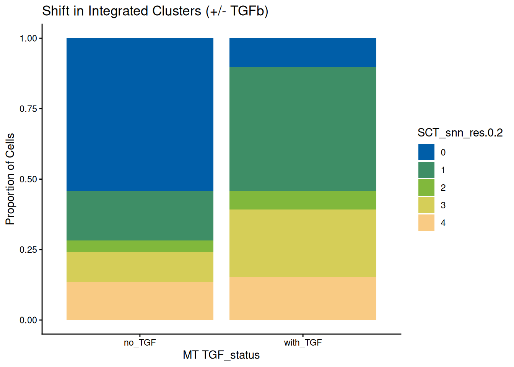
Chi-squared to check
Propeller is not possible because we have N = 1 per condition
- We do have a sign. diff. in the distibution of condition to clusters
# contingency table (Clusters x Condition)
counts_table <- table(mt_meta$SCT_snn_res.0.2, mt_meta$condition)
print(counts_table)
no_TGF with_TGF
0 358 48
1 117 204
2 27 30
3 70 111
4 90 71# Global test across all clusters
chisq_res <- chisq.test(counts_table)
print(chisq_res)
Pearson's Chi-squared test
data: counts_table
X-squared = 244.72, df = 4, p-value < 2.2e-16## Post hoc Fishers Exact to compare specific clusters
cluster_stats <- data.frame(
Cluster = rownames(counts_table),
NC_Count = counts_table[, "no_TGF"],
TGFb_Count = counts_table[, "with_TGF"],
stringsAsFactors = FALSE
)
# Total cells per condition
total_nc <- sum(counts_table[, "no_TGF"])
total_tgfb <- sum(counts_table[, "with_TGF"])
# Run 2x2 Fisher's test per cluster
cluster_stats <- cluster_stats %>%
rowwise() %>%
mutate(
NC_Other = total_nc - NC_Count,
TGFb_Other = total_tgfb - TGFb_Count,
p_val = fisher.test(matrix(c(NC_Count, NC_Other, TGFb_Count, TGFb_Other), nrow = 2))$p.value,
Prop_NC = NC_Count / total_nc,
Prop_TGFb = TGFb_Count / total_tgfb,
Log2FC = log2((Prop_TGFb + 1e-5) / (Prop_NC + 1e-5))
) %>%
ungroup() %>%
mutate(FDR = p.adjust(p_val, method = "BH"))
print(cluster_stats)# A tibble: 5 × 10
Cluster NC_Count TGFb_Count NC_Other TGFb_Other p_val Prop_NC Prop_TGFb
<chr> <int> <int> <int> <int> <dbl> <dbl> <dbl>
1 0 358 48 304 416 5.07e-56 0.541 0.103
2 1 117 204 545 260 1.04e-21 0.177 0.440
3 2 27 30 635 434 7.44e- 2 0.0408 0.0647
4 3 70 111 592 353 3.26e- 9 0.106 0.239
5 4 90 71 572 393 4.37e- 1 0.136 0.153
# ℹ 2 more variables: Log2FC <dbl>, FDR <dbl>Find markers per cluster
to figure out what cluster 0 and 1 are
Cluster 0 seems to be more “tissue resident” - sign change
Cluster 1 seems to be more Antigen-Presenting, immune surveillance type - sign change
Cluster 2 seems to be more inflammatory - no sign. change
Idents(macrophage_merged) <- "SCT_snn_res.0.2"
DefaultAssay(macrophage_merged) <- "SCT"
macrophage_merged <- PrepSCTFindMarkers(macrophage_merged)Found 344 SCT models. Recorrecting SCT counts using minimum median counts: 316Markers <- FindAllMarkers(
macrophage_merged,
assay = "SCT",
only.pos = TRUE,
min.pct = 0.25,
logfc.threshold = 0.5
)Calculating cluster 0Calculating cluster 1Calculating cluster 2Warning in FindMarkers.default(object = data.use, cells.1 = cells.1, cells.2 =
cells.2, : No features pass logfc.threshold threshold; returning empty
data.frameCalculating cluster 3Calculating cluster 4Markers_top10 <- as.data.frame(Markers %>% group_by(cluster) %>% top_n(n = 10, wt = avg_log2FC))
Markers_top3 <- as.data.frame(Markers %>% group_by(cluster) %>% top_n(n = 3, wt = avg_log2FC))
# the to 10 genes of cluster 0:
Markers_top10 %>%
filter(cluster == "0") %>%
pull(gene) [1] "F13A1" "NAV2" "RBPJ" "PDE4D" "PDGFC" "FGF13" "SCN9A"
[8] "CD163L1" "LGMN" "ME1" # the to 10 genes of cluster 1:
Markers_top10 %>%
filter(cluster == "1") %>%
pull(gene) [1] "AOAH" "PLXDC2" "ANKRD44" "SSH2" "SIPA1L1" "PTPRC" "DOCK8"
[8] "CD74" "MYO1F" "IRAK3" # the to 10 genes of cluster 2:
Markers_top10 %>%
filter(cluster == "2") %>%
pull(gene)character(0)Scores
Resident Macrophages score
# Configuration & Gene List Setup
score_name <- "Resident_Score"
score_title <- "Resident Macrophage Signature"
resident_genes <- c("LYVE1", "F13A1", "FOLR2", "MRC1", "CD163", "SELENOP", "C1QA", "TIMD4")
DefaultAssay(macrophage_merged) <- "RNA"
# Filter specifically for MT_Data dataset
seurat_obj <- subset(macrophage_merged, Dataset == "MT_Data")
# Filter genes present in object to avoid UCell execution errors
valid_genes <- intersect(resident_genes, rownames(seurat_obj))
# Add UCell Module Score
features_list <- list()
features_list[[score_name]] <- valid_genes
seurat_obj <- AddModuleScore_UCell(
obj = seurat_obj,
features = features_list,
name = "_UCell"
)
# Target UCell column generated by Seurat: "Resident_Score_UCell"
score_col <- paste0(score_name, "_UCell")
# Set up comparison groups & colors
comp <- c("no_TGF", "with_TGF")
comp_colors <- c("no_TGF" = "#005EA8", "with_TGF" = "#9F1C67")
seurat_obj <- subset(seurat_obj, condition %in% comp)
seurat_obj$TGF_status <- factor(seurat_obj$condition, levels = comp)
plot_df <- FetchData(seurat_obj, vars = c(score_col, "TGF_status"))
colnames(plot_df) <- c("Score", "TGF_status")
p_violin <- ggplot(plot_df, aes(x = TGF_status, y = Score, fill = TGF_status)) +
geom_violin(scale = "width", trim = TRUE, alpha = 0.7, color = "black") +
geom_boxplot(width = 0.1, fill = "white", outlier.shape = NA, color = "black") +
stat_compare_means(
method = "wilcox.test",
comparisons = list(comp),
label = "p.signif"
) +
scale_fill_manual(values = comp_colors) +
theme_classic() +
labs(
title = paste0("Macrophage (MT): ", score_title),
subtitle = paste0(comp[1], " vs ", comp[2]),
x = "TGF Status",
y = paste0(score_title, " (UCell Score)")
) +
theme(
plot.title = element_text(face = "bold", size = 12, hjust = 0),
plot.subtitle = element_text(face = "italic", size = 10, hjust = 0),
legend.position = "none",
axis.text = element_text(size = 11, color = "black"),
axis.title = element_text(size = 12)
)
# Render Violin Plot
print(p_violin)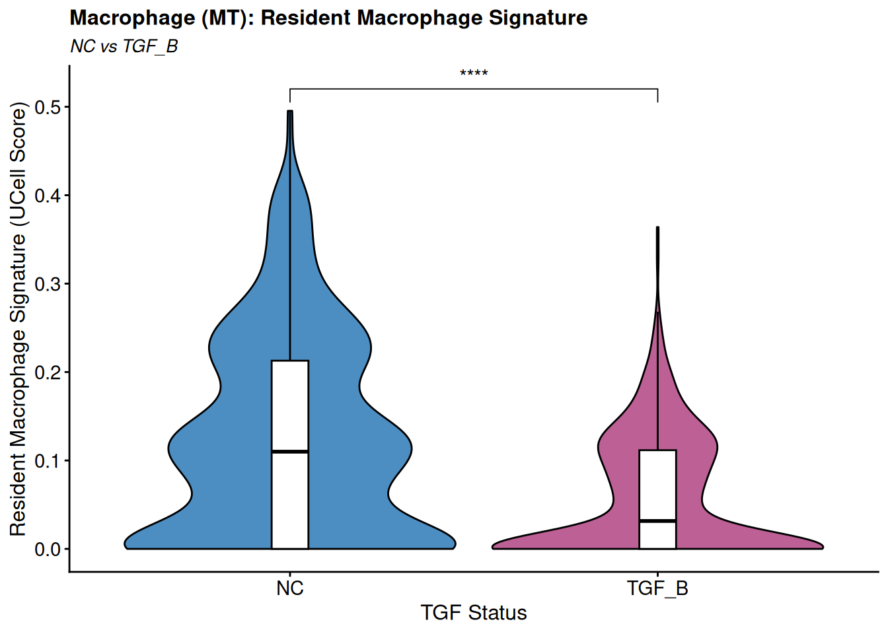
p_split <- FeaturePlot_scCustom(
seurat_obj,
features = score_col,
split.by = "TGF_status"
) Warning: Some of the plotted features are from meta.data slot.
• Please check that `na_cutoff` param is being set appropriately for those
features.
NOTE: FeaturePlot_scCustom uses a specified `na_cutoff` when plotting to
color cells with no expression as background color separate from color scale.
Please ensure `na_cutoff` value is appropriate for feature being plotted.
Default setting is appropriate for use when plotting from 'RNA' assay.
When `na_cutoff` not appropriate (e.g., module scores) set to NULL to
plot all cells in gradient color palette.
-----This message will be shown once per session.-----p_split <- p_split +
plot_annotation(
title = paste0("Macrophage (MT): ", score_title),
subtitle = paste0(comp[1], " vs ", comp[2]),
theme = theme(
plot.title = element_text(face = "bold", size = 12, hjust = 0),
plot.subtitle = element_text(face = "italic", size = 10, hjust = 0)
)
) &
theme(
aspect.ratio = 1.0,
axis.text.y = element_text(size = 10, hjust = 0),
axis.title = element_text(face = "plain")
)
# Render Split Feature Plot
print(p_split)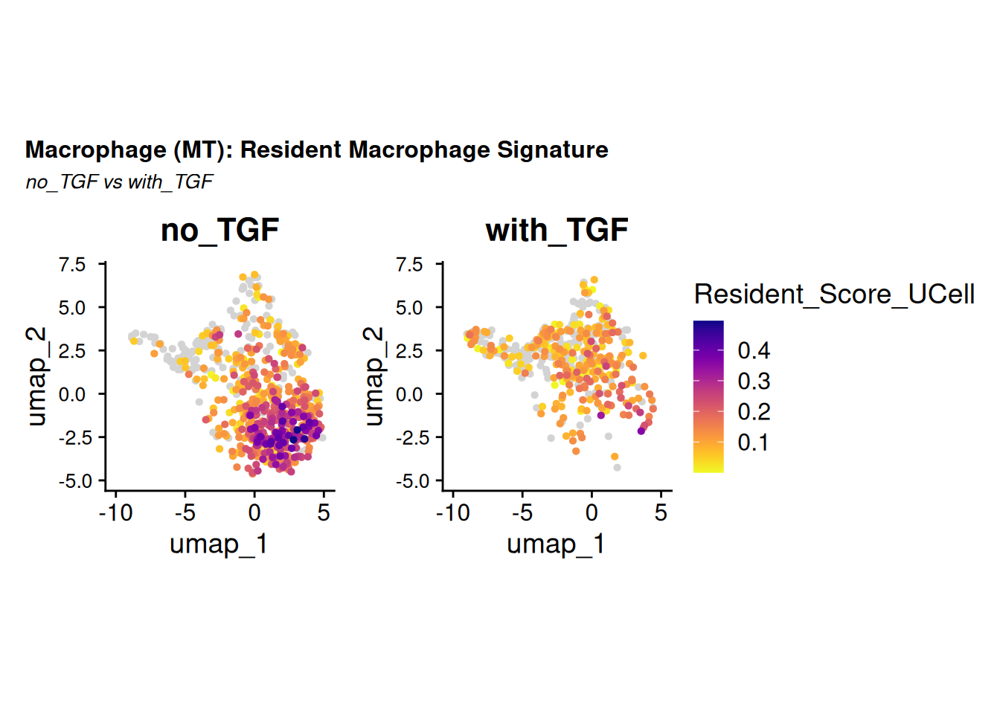
Activating Macrophages score
# Configuration & Gene List Setup
score_name <- "Activating_Score"
score_title <- "Activating Macrophage Signature"
activation_genes <- c("CD68", "LAMP1", "CTSB", "CTSD", "LGALS3", "CAPG", "MSR1", "GRN", "PLA2G7", "ATP6V0C")
DefaultAssay(macrophage_merged) <- "RNA"
# Filter specifically for MT_Data dataset
seurat_obj <- subset(macrophage_merged, Dataset == "MT_Data")
# Filter genes present in object to avoid UCell execution errors
valid_genes <- intersect(activation_genes, rownames(seurat_obj))
# Add UCell Module Score
features_list <- list()
features_list[[score_name]] <- valid_genes
seurat_obj <- AddModuleScore_UCell(
obj = seurat_obj,
features = features_list,
name = "_UCell"
)
# Target UCell column generated by Seurat: "Resident_Score_UCell"
score_col <- paste0(score_name, "_UCell")
# Set up comparison groups & colors
comp <- c("no_TGF", "with_TGF")
comp_colors <- c("no_TGF" = "#005EA8", "with_TGF" = "#9F1C67")
seurat_obj <- subset(seurat_obj, condition %in% comp)
seurat_obj$TGF_status <- factor(seurat_obj$condition, levels = comp)
plot_df <- FetchData(seurat_obj, vars = c(score_col, "TGF_status"))
colnames(plot_df) <- c("Score", "TGF_status")
p_violin <- ggplot(plot_df, aes(x = TGF_status, y = Score, fill = TGF_status)) +
geom_violin(scale = "width", trim = TRUE, alpha = 0.7, color = "black") +
geom_boxplot(width = 0.1, fill = "white", outlier.shape = NA, color = "black") +
stat_compare_means(
method = "wilcox.test",
comparisons = list(comp),
label = "p.signif"
) +
scale_fill_manual(values = comp_colors) +
theme_classic() +
labs(
title = paste0("Macrophage (MT): ", score_title),
subtitle = paste0(comp[1], " vs ", comp[2]),
x = "TGF Status",
y = paste0(score_title, " (UCell Score)")
) +
theme(
plot.title = element_text(face = "bold", size = 12, hjust = 0),
plot.subtitle = element_text(face = "italic", size = 10, hjust = 0),
legend.position = "none",
axis.text = element_text(size = 11, color = "black"),
axis.title = element_text(size = 12)
)
# Render Violin Plot
print(p_violin)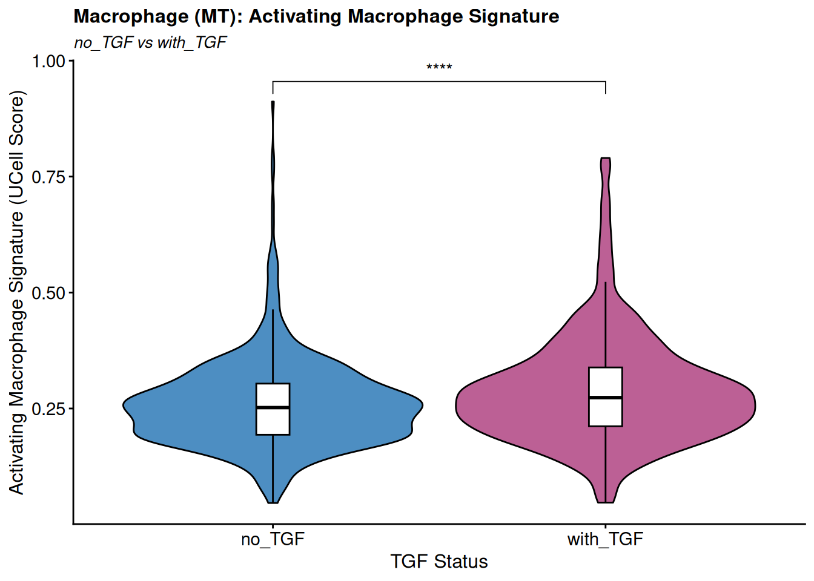
p_split <- FeaturePlot_scCustom(
seurat_obj,
features = score_col,
split.by = "TGF_status"
) Warning: Some of the plotted features are from meta.data slot.
• Please check that `na_cutoff` param is being set appropriately for those
features.p_split <- p_split +
plot_annotation(
title = paste0("Macrophage (MT): ", score_title),
subtitle = paste0(comp[1], " vs ", comp[2]),
theme = theme(
plot.title = element_text(face = "bold", size = 12, hjust = 0),
plot.subtitle = element_text(face = "italic", size = 10, hjust = 0)
)
) &
theme(
aspect.ratio = 1.0,
axis.text.y = element_text(size = 10, hjust = 0),
axis.title = element_text(face = "plain")
)
# Render Split Feature Plot
print(p_split)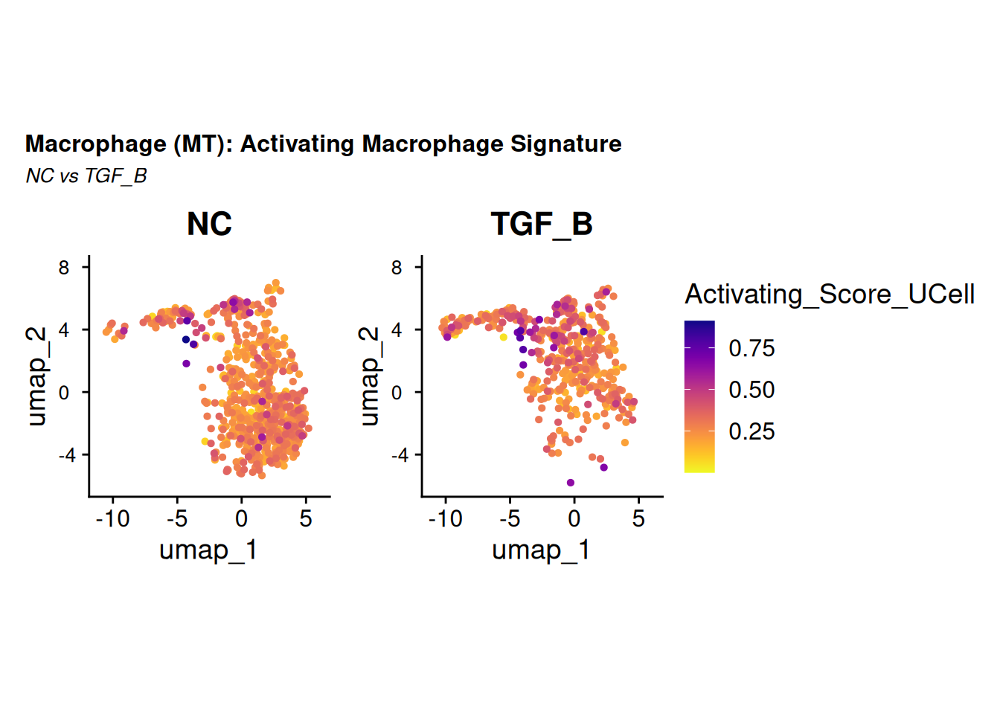
Inflammatory Macrophages score
# Configuration & Gene List Setup
score_name <- "Inflammatory_Score"
score_title <- "Inflammatory Macrophage Signature"
inflammatory_genes <- c("IL1B", "TNF", "IL6", "CXCL8", "CCL2", "CCL3", "CCL4", "PTGS2", "NLRP3", "NFKB1")
DefaultAssay(macrophage_merged) <- "RNA"
# Filter specifically for MT_Data dataset
seurat_obj <- subset(macrophage_merged, Dataset == "MT_Data")
# Filter genes present in object to avoid UCell execution errors
valid_genes <- intersect(inflammatory_genes, rownames(seurat_obj))
# Add UCell Module Score
features_list <- list()
features_list[[score_name]] <- valid_genes
seurat_obj <- AddModuleScore_UCell(
obj = seurat_obj,
features = features_list,
name = "_UCell"
)
# Target UCell column generated by Seurat: "Resident_Score_UCell"
score_col <- paste0(score_name, "_UCell")
# Set up comparison groups & colors
comp <- c("no_TGF", "with_TGF")
comp_colors <- c("no_TGF" = "#005EA8", "with_TGF" = "#9F1C67")
seurat_obj <- subset(seurat_obj, condition %in% comp)
seurat_obj$TGF_status <- factor(seurat_obj$condition, levels = comp)
plot_df <- FetchData(seurat_obj, vars = c(score_col, "TGF_status"))
colnames(plot_df) <- c("Score", "TGF_status")
p_violin <- ggplot(plot_df, aes(x = TGF_status, y = Score, fill = TGF_status)) +
geom_violin(scale = "width", trim = TRUE, alpha = 0.7, color = "black") +
geom_boxplot(width = 0.1, fill = "white", outlier.shape = NA, color = "black") +
stat_compare_means(
method = "wilcox.test",
comparisons = list(comp),
label = "p.signif"
) +
scale_fill_manual(values = comp_colors) +
theme_classic() +
labs(
title = paste0("Macrophage (MT): ", score_title),
subtitle = paste0(comp[1], " vs ", comp[2]),
x = "TGF Status",
y = paste0(score_title, " (UCell Score)")
) +
theme(
plot.title = element_text(face = "bold", size = 12, hjust = 0),
plot.subtitle = element_text(face = "italic", size = 10, hjust = 0),
legend.position = "none",
axis.text = element_text(size = 11, color = "black"),
axis.title = element_text(size = 12)
)
# Render Violin Plot
print(p_violin)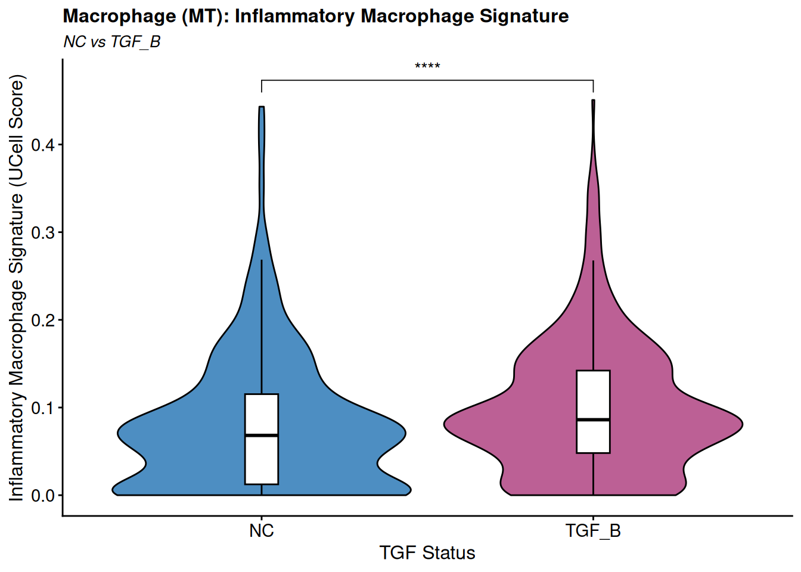
p_split <- FeaturePlot_scCustom(
seurat_obj,
features = score_col,
split.by = "TGF_status"
) Warning: Some of the plotted features are from meta.data slot.
• Please check that `na_cutoff` param is being set appropriately for those
features.p_split <- p_split +
plot_annotation(
title = paste0("Macrophage (MT): ", score_title),
subtitle = paste0(comp[1], " vs ", comp[2]),
theme = theme(
plot.title = element_text(face = "bold", size = 12, hjust = 0),
plot.subtitle = element_text(face = "italic", size = 10, hjust = 0)
)
) &
theme(
aspect.ratio = 1.0,
axis.text.y = element_text(size = 10, hjust = 0),
axis.title = element_text(face = "plain")
)
# Render Split Feature Plot
print(p_split)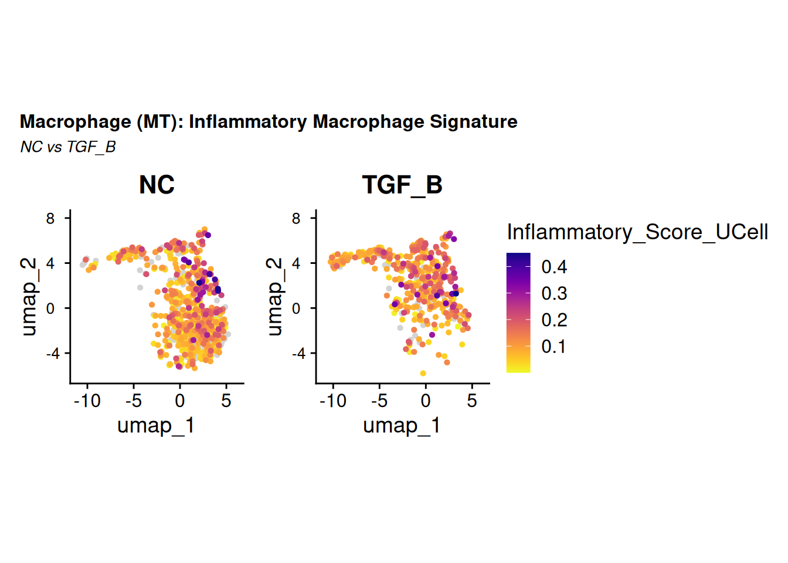
Check diff. in disease vs HC
Import Rds
################### MT-Data
# path <- "/shares/rheumatologie.usz/Sophie/Gabi_Projects/Data_Sets_Heart/Mac_Integrated3_MT_Derived_sample.rds"
# macrophage_merged <- read_rds(path)
custom_palette <- colorRampPalette(c("#005EA8", "#6DB335", "#FFD966", "#EDAAD2", "#9F1C67"))
cols2 <- custom_palette(2)
cols3 <- custom_palette(3)
cols4 <- custom_palette(4)
cols5 <- custom_palette(5)
cols6 <- custom_palette(6)
cols8 <- custom_palette(8)
cols10 <- custom_palette(10)
cols39 <- custom_palette(39)Vizualisations
DimPlot(
macrophage_merged,
reduction = "umap",
group.by = "SCT_snn_res.0.2",
cols = cols8,
label = TRUE,
repel = TRUE,
shuffle = TRUE,
raster = FALSE,
pt.size = 0.1
) +
NoLegend() +
ggtitle("Combined Macrophages SCT_snn_res.0.2") +
theme(
axis.text = element_text(size = 8, face = "bold"),
axis.title = element_text(size = 12, face = "bold"),
plot.title = element_text(size = 14, face = "bold", hjust = 0.5)
)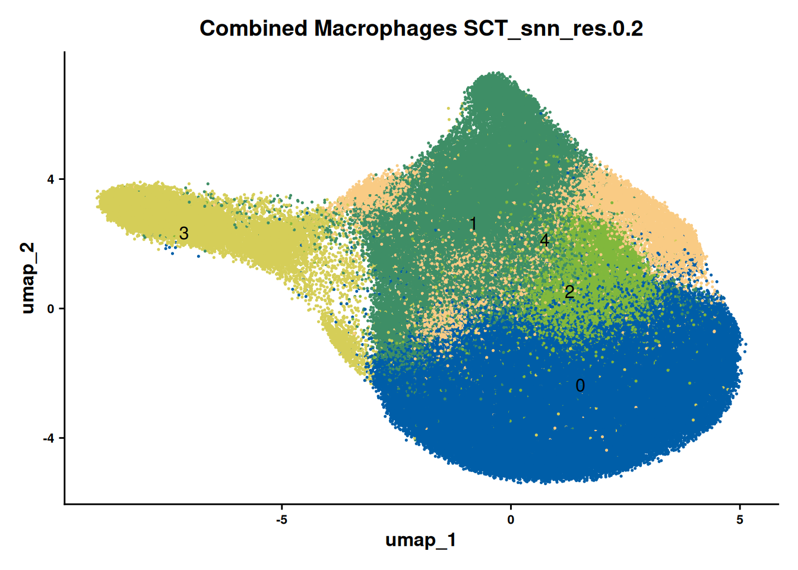
| Version | Author | Date |
|---|---|---|
| f0d9695 | Sophie | 2026-09-23 |
DimPlot(
macrophage_merged,
reduction = "umap",
group.by = "SCT_snn_res.0.3",
cols = cols10,
label = TRUE,
repel = TRUE,
shuffle = TRUE,
raster = FALSE,
pt.size = 0.1
) +
NoLegend() +
ggtitle("Combined Macrophages SCT_snn_res.0.3") +
theme(
axis.text = element_text(size = 8, face = "bold"),
axis.title = element_text(size = 12, face = "bold"),
plot.title = element_text(size = 14, face = "bold", hjust = 0.5)
)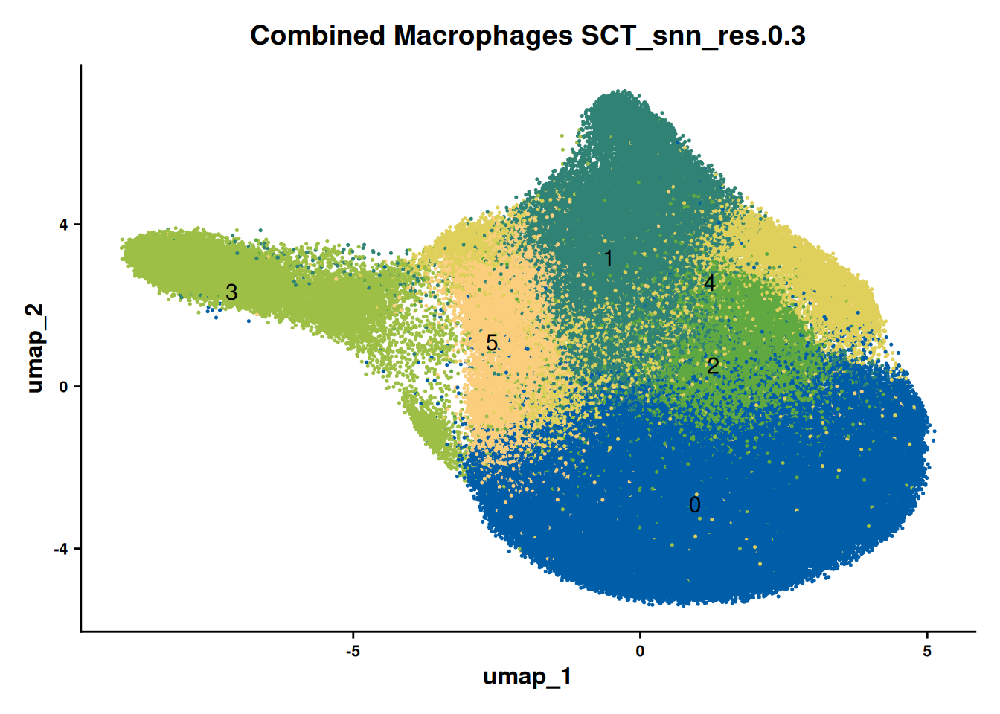
| Version | Author | Date |
|---|---|---|
| f0d9695 | Sophie | 2026-09-23 |
Idents(macrophage_merged) <- "SCT_snn_res.0.2"Proportions across the conditions
table(macrophage_merged$SCT_snn_res.0.2, macrophage_merged$condition)
ACM DCM HC HCM LVCM no_TGF with_TGF
0 5525 37344 24837 10440 348 358 48
1 2640 20417 13919 6200 203 117 204
2 1065 7191 5688 2279 113 27 30
3 734 6018 6741 1734 52 70 111
4 718 5411 4576 2014 50 90 71# Extract metadata for the MT dataset only
meta <- macrophage_merged@meta.data
# 3. Plot cluster distribution: Untreated vs. TGF-β treated
ggplot(meta, aes(x = condition, fill = SCT_snn_res.0.2)) +
geom_bar(position = "fill") +
theme_classic() +
scale_fill_manual(values = cols8) +
labs(y = "Proportion of Cells", x = "MT TGF_status", title = "Shift in Integrated Clusters (+/- TGFb)")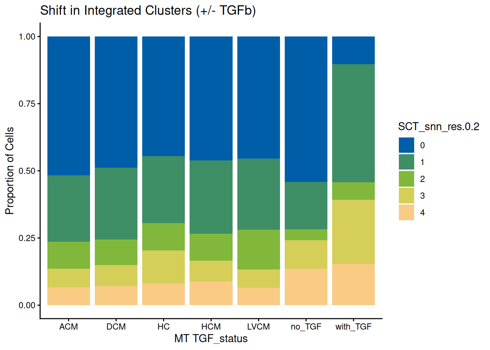
| Version | Author | Date |
|---|---|---|
| f0d9695 | Sophie | 2026-09-23 |
kNN Reference to see which conditions are closest in the space
library(Seurat)
library(FNN)
library(dplyr)
library(tidyr)
library(ggplot2)
# Define labels and metadata column name
cond_col <- "condition"
ref_conditions <- c("HC", "ACM", "DCM", "HCM", "LVCM")
query_conditions <- c("no_TGF", "with_TGF")
# Extract Harmony Embeddings (top 20 dimensions)
harmony_embeds <- Embeddings(macrophage_merged, reduction = "harmony")[, 1:20]
# Split cell IDs into Reference and Query sets
meta_data <- macrophage_merged@meta.data
ref_cells <- rownames(meta_data[meta_data[[cond_col]] %in% ref_conditions, ])
query_cells <- rownames(meta_data[meta_data[[cond_col]] %in% query_conditions, ])
ref_embeds <- harmony_embeds[ref_cells, ]
query_embeds <- harmony_embeds[query_cells, ]
ref_labels <- meta_data[ref_cells, cond_col]
# Query k-Nearest Neighbors
k <- 20
knn_out <- get.knnx(data = ref_embeds, query = query_embeds, k = k)
# Map index matrix to reference labels
neighbor_matrix <- matrix(ref_labels[knn_out$nn.index], nrow = length(query_cells), ncol = k)
# Compute proportion of each reference state dynamically for every query cell
prop_list <- lapply(ref_conditions, function(cond) {
rowMeans(neighbor_matrix == cond)
})
names(prop_list) <- paste0("prop_", ref_conditions)
# Combine into a metadata dataframe
knn_results <- data.frame(
cell_id = query_cells,
condition = meta_data[query_cells, cond_col],
as.data.frame(prop_list)
)
# Store proportions back into the Seurat object
for (cond in ref_conditions) {
col_name <- paste0("prop_", cond)
macrophage_merged@meta.data[[col_name]] <- NA
macrophage_merged@meta.data[knn_results$cell_id, col_name] <- knn_results[[col_name]]
}
# Visualize Proportions
plot_df <- knn_results %>%
pivot_longer(cols = starts_with("prop_"), names_to = "Ref_State", values_to = "Proportion") %>%
mutate(Ref_State = gsub("prop_", "", Ref_State)) %>%
mutate(Ref_State = factor(Ref_State, levels = ref_conditions))
# Color palette for 5 reference conditions
ref_colors <- c("HC" = "#005EA8",
"ACM" = "#6DB335",
"DCM" = "#FFD966",
"HCM" = "#EDAAD2",
"LVCM" = "#9F1C67")
ggplot(plot_df, aes(x = condition, y = Proportion, fill = Ref_State)) +
geom_boxplot(outlier.size = 0.1, alpha = 0.8) +
theme_classic() +
scale_fill_manual(values = ref_colors) +
labs(
title = "kNN Reference Neighborhood Proportions (k = 20)",
x = "Query Condition",
y = "Proportion of 20-NN Reference Neighbors",
fill = "Reference Condition"
)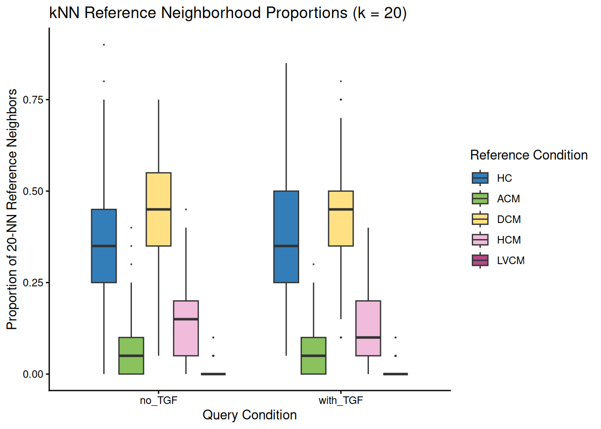
| Version | Author | Date |
|---|---|---|
| f0d9695 | Sophie | 2026-09-23 |
Differential Gene Expression Correlation across Disease groups
macrophage_only <- subset(macrophage_merged, macrophage_merged$cell_statesL1 == "Macrophage")
rna_counts <- GetAssayData(macrophage_only, assay = "RNA", layer = "counts")
macrophage_only[["RNA"]] <- CreateAssayObject(counts = rna_counts, v3.assay = TRUE)Warning: Assay RNA changing from Assay5 to Assay# 2. Re-run log-normalization across the unified matrix
macrophage_only <- NormalizeData(macrophage_only)
# Reset Default Assay and Idents
DefaultAssay(macrophage_only) <- "RNA"
Idents(macrophage_only) <- "condition"
# Run Query DEG Comparison 1
#(we want to see whether the difference of DEGs in the microtissue correlates to the DEG of the other groups)
deg_TGFb <- FindMarkers(macrophage_only, ident.1 = "with_TGF", ident.2 = "no_TGF", min.pct = 0.1, logfc.threshold = 0)
#deg_noTGFb <- FindMarkers(macrophage_only, ident.1 = "no_TGF", ident.2 = "HC", min.pct = 0.1, logfc.threshold = 0)
# Run Reference Disease DEG Comparisons (vs Healthy Control)
deg_ACM <- FindMarkers(macrophage_only, ident.1 = "ACM", ident.2 = "HC", min.pct = 0.1, logfc.threshold = 0)
deg_DCM <- FindMarkers(macrophage_only, ident.1 = "DCM", ident.2 = "HC", min.pct = 0.1, logfc.threshold = 0)
deg_HCM <- FindMarkers(macrophage_only, ident.1 = "HCM", ident.2 = "HC", min.pct = 0.1, logfc.threshold = 0)
deg_LVCM <- FindMarkers(macrophage_only, ident.1 = "LVCM", ident.2 = "HC", min.pct = 0.1, logfc.threshold = 0)
# Select shared variable genes or union of top DEGs across comparisons
top_sig_genes <- unique(c(
rownames(subset(deg_TGFb, p_val_adj < 0.01 & abs(avg_log2FC) > 0.5)),
rownames(subset(deg_ACM, p_val_adj < 0.01 & abs(avg_log2FC) > 0.5)),
rownames(subset(deg_HCM, p_val_adj < 0.01 & abs(avg_log2FC) > 0.5)),
rownames(subset(deg_LVCM, p_val_adj < 0.01 & abs(avg_log2FC) > 0.5)),
rownames(subset(deg_DCM, p_val_adj < 0.01 & abs(avg_log2FC) > 0.5))
))
# Build log2FC dataframe across shared genes
log2fc_df <- data.frame(
Gene = top_sig_genes,
TGFb = deg_TGFb[top_sig_genes, "avg_log2FC"],
ACM = deg_ACM[top_sig_genes, "avg_log2FC"],
DCM = deg_DCM[top_sig_genes, "avg_log2FC"],
HCM = deg_HCM[top_sig_genes, "avg_log2FC"],
LVCM = deg_LVCM[top_sig_genes, "avg_log2FC"]
)
# Remove rows with NA (genes not present in all test results)
log2fc_clean <- na.omit(log2fc_df)
rownames(log2fc_clean) <- log2fc_clean$Gene
log2fc_mat <- log2fc_clean[, -1]
spearman_cor <- cor(log2fc_mat, method = "spearman")
library(corrplot)corrplot 0.95 loaded# Visualize Correlation Matrix
corrplot(
spearman_cor,
method = "color",
type = "upper",
addCoef.col = "black",
tl.col = "black",
tl.srt = 45,
title = "Spearman Correlation of log2FC Profiles",
mar = c(0,0,2,0)
)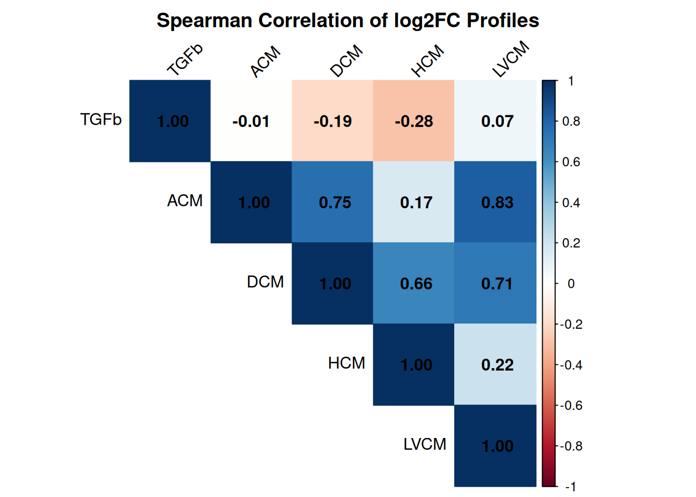
| Version | Author | Date |
|---|---|---|
| f0d9695 | Sophie | 2026-09-23 |
Pseudo-bulk Sample Distance & Hierarchical Clustering
library(Seurat)
library(dplyr)
library(pheatmap)
Attaching package: 'pheatmap'The following object is masked from 'package:ComplexHeatmap':
pheatmap# Aggregate single-cell expression into pseudo-bulk profiles by condition
pb_list <- AggregateExpression(
macrophage_only,
assays = "RNA",
return.seurat = FALSE,
group.by = "condition"
)Names of identity class contain underscores ('_'), replacing with dashes ('-')
This message is displayed once every 8 hours.# Extract RNA and convert sparse matrix to standard dense R matrix
pb_raw <- as.matrix(pb_list$RNA)
# Ensure variable features are calculated and exist in the matrix
hvgs <- VariableFeatures(macrophage_only)
if (length(hvgs) == 0) {
macrophage_only <- FindVariableFeatures(macrophage_only, nfeatures = 2000)
hvgs <- VariableFeatures(macrophage_only)
}
valid_hvgs <- intersect(hvgs, rownames(pb_raw))
# Log-normalize the pseudo-bulk matrix for variable genes
pb_mat <- log1p(pb_raw[valid_hvgs, ])
# Compute Pearson correlation matrix across conditions
cor_mat <- cor(pb_mat, method = "pearson")
# Plot Hierarchical Clustering & Heatmap
pheatmap(
cor_mat,
clustering_distance_rows = as.dist(1 - cor_mat),
clustering_distance_cols = as.dist(1 - cor_mat),
display_numbers = TRUE,
number_format = "%.2f",
main = "Pseudo-bulk Transcriptomic Pearson Correlation"
)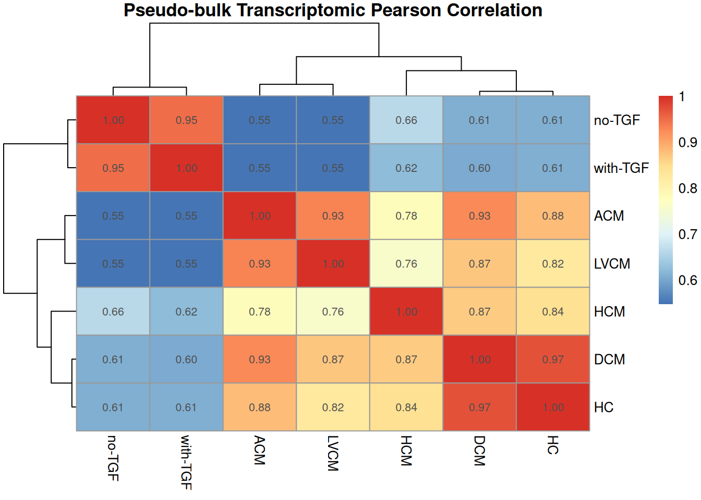
| Version | Author | Date |
|---|---|---|
| f0d9695 | Sophie | 2026-09-23 |
one last try - merging all disease states together
table(macrophage_only@meta.data$condition)
ACM DCM HC HCM LVCM no_TGF with_TGF
7910 60860 45389 19848 552 662 464 disease_map <- c(
"ACM" = "Disease",
"DCM" = "Disease",
"HCM" = "Disease",
"LVCM" = "Disease")
clean_disease <- trimws(macrophage_only$condition)
macrophage_only$disease_state <- ifelse(clean_disease %in% names(disease_map),
disease_map[clean_disease],
clean_disease)
table(macrophage_only$disease_state)
Disease HC no_TGF with_TGF
89170 45389 662 464 #####################
# Aggregate single-cell expression into pseudo-bulk profiles by disease_state
pb_list <- AggregateExpression(
macrophage_only,
assays = "RNA",
return.seurat = FALSE,
group.by = "disease_state"
)
# Extract RNA and convert sparse matrix to standard dense R matrix
pb_raw <- as.matrix(pb_list$RNA)
# Ensure variable features are calculated and exist in the matrix
hvgs <- VariableFeatures(macrophage_only)
if (length(hvgs) == 0) {
macrophage_only <- FindVariableFeatures(macrophage_only, nfeatures = 2000)
hvgs <- VariableFeatures(macrophage_only)
}
valid_hvgs <- intersect(hvgs, rownames(pb_raw))
# Log-normalize the pseudo-bulk matrix for variable genes
pb_mat <- log1p(pb_raw[valid_hvgs, ])
# Compute Pearson correlation matrix across conditions
cor_mat <- cor(pb_mat, method = "pearson")
# Plot Hierarchical Clustering & Heatmap
pheatmap(
cor_mat,
clustering_distance_rows = as.dist(1 - cor_mat),
clustering_distance_cols = as.dist(1 - cor_mat),
display_numbers = TRUE,
number_format = "%.2f",
main = "Pseudo-bulk Transcriptomic Pearson Correlation"
)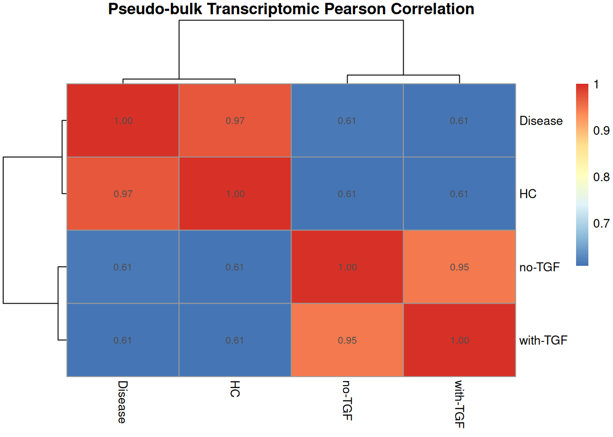
| Version | Author | Date |
|---|---|---|
| f0d9695 | Sophie | 2026-09-23 |
DEG across pseudo Subtypes
- Sadly turns out the UMAP was overfitted…
- when correcting for the overfittedness our MT derived samples cluster separately
- meaning all that the calculated UMAP clusters are not biologically relevant
- the condition correlation resulted in no sign assignment of TFG-B sim macrophages to disease state
- the DGEA correlation showed no significant assignment to a disease state
- this is a last try to identify whether we can assign our MT to a disease state with transfer anchors
table(macrophage_only$cell_statesL2)
Macrophage_Inflammatory_Chemokine Macrophage_ISG
8757 2051
Macrophage_MHCII_AgP Macrophage_Resident_LYVE1
7245 65767
Macrophage_TREM2_Phagocytic MT_Macrophages
21487 1126
unknown
29252 table(macrophage_only$cell_statesL2, macrophage_only$SCT_snn_res.0.2)
0 1 2 3 4
Macrophage_Inflammatory_Chemokine 4149 2611 785 155 1057
Macrophage_ISG 1428 281 198 41 103
Macrophage_MHCII_AgP 2399 2649 837 309 1051
Macrophage_Resident_LYVE1 48478 6587 5957 1511 3234
Macrophage_TREM2_Phagocytic 1621 14142 1859 354 3511
MT_Macrophages 406 321 57 181 161
unknown 15062 8174 2701 771 2544# resident
FeaturePlot_scCustom(
macrophage_merged,
features = c("LYVE1","FOLR2", "MRC1", "IL1B","CXCL8", "CCL2","HLA-DRA","CD74", "HLA-DRB1")
) Warning: Removing 63923 cells missing data for features requested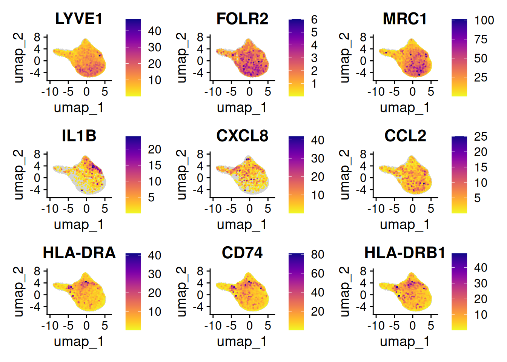
# inflamm
FeaturePlot_scCustom(
macrophage_only,
features = c("IL1B","CXCL8", "CCL2")
) 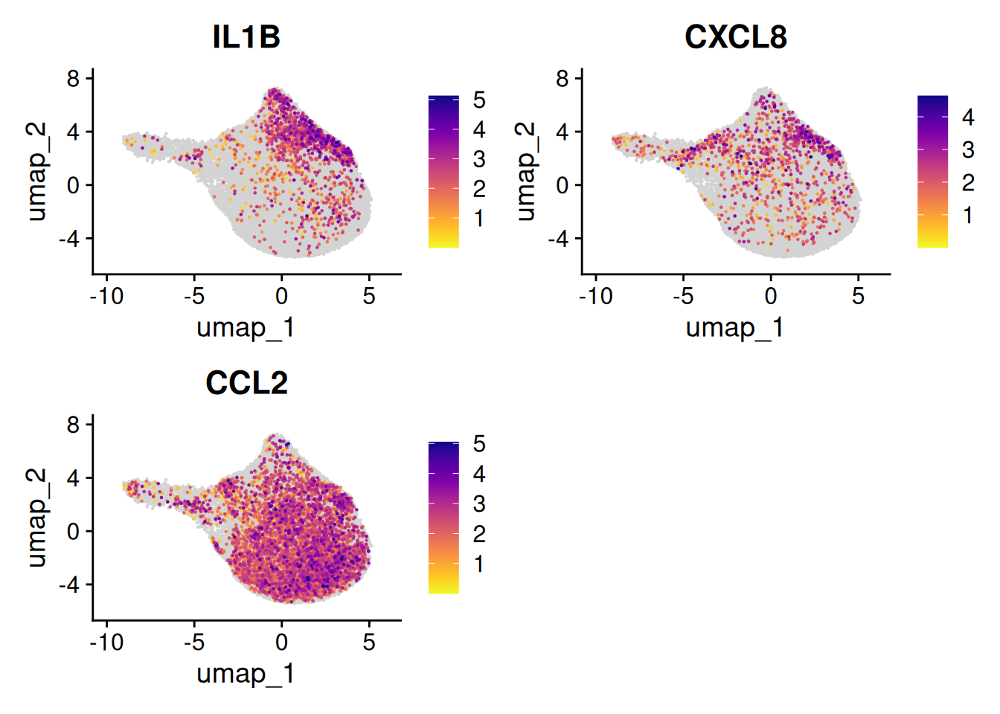
# ag presenting
FeaturePlot_scCustom(
macrophage_only,
features = c("HLA-DRA","CD74", "HLA-DRB1")
) 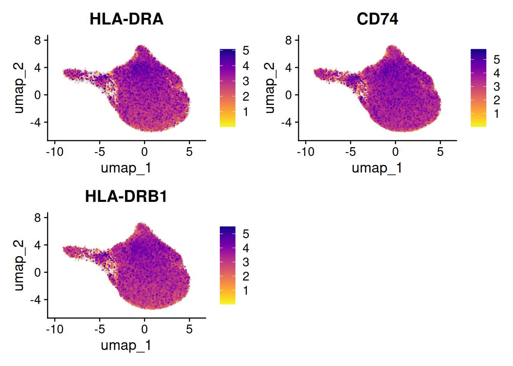
DimPlot(macrophage_merged, reduction = "umap", group.by = "Dataset")Rasterizing points since number of points exceeds 100,000.
To disable this behavior set `raster=FALSE`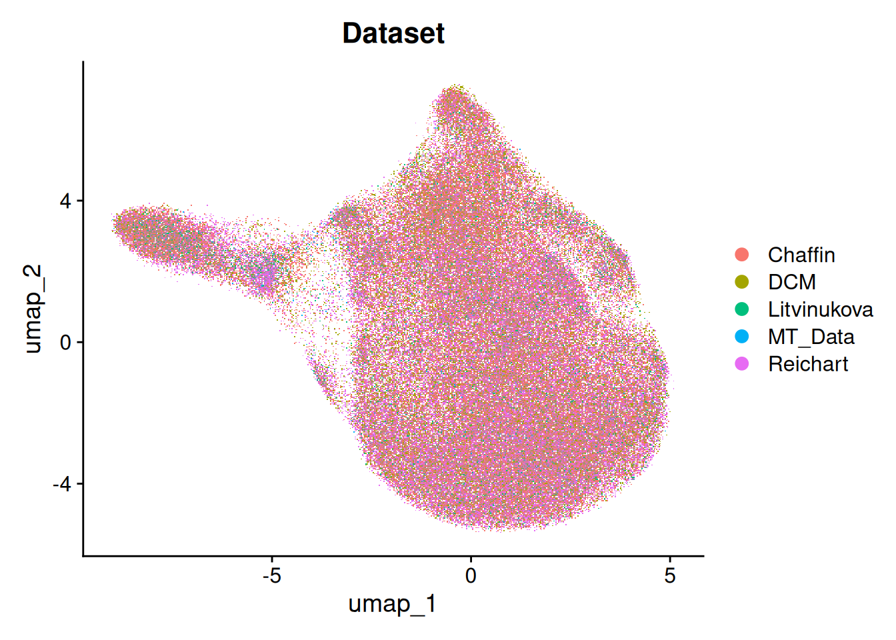
DimPlot(macrophage_merged, reduction = "umap", group.by = "method")Rasterizing points since number of points exceeds 100,000.
To disable this behavior set `raster=FALSE`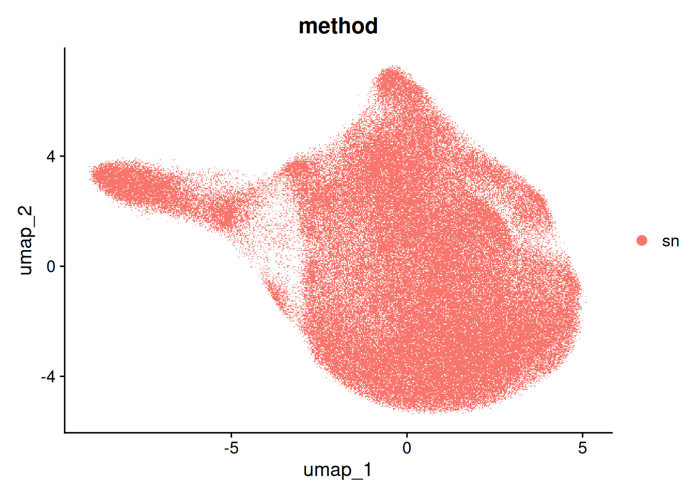
subset of the non overfitted results
path <- "/shares/rheumatologie.usz/Sophie/Gabi_Projects/Data_Sets_Heart/Mac_non_MT_Derived_sample.rds"
macrophage_sub<- read_rds(path)
DimPlot(
macrophage_sub,
reduction = "umap",
group.by = "SCT_snn_res.0.2",
split.by = "condition",
cols = cols8,
label = TRUE,
repel = TRUE,
shuffle = TRUE,
raster = FALSE,
pt.size = 0.1
) +
NoLegend() +
ggtitle("Subset Macrophages SCT_snn_res.0.2") +
theme(
axis.text = element_text(size = 8, face = "bold"),
axis.title = element_text(size = 12, face = "bold"),
plot.title = element_text(size = 14, face = "bold", hjust = 0.5)
)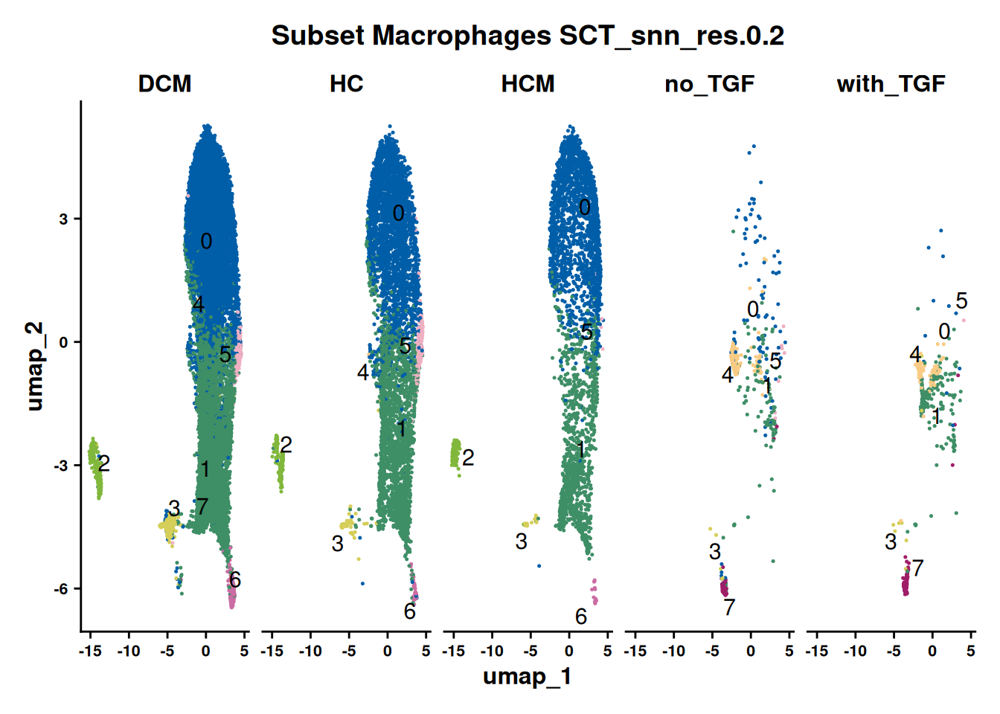
Try transfer anchors
Anchor visualizations - per condition
# Subset the merged object into Reference (Primary Tissue) and Query (Microtissue)
ref_obj <- subset(macrophage_merged, subset = Dataset != "MT_Data")
query_obj <- subset(macrophage_merged, subset = Dataset == "MT_Data")
# Ensure SCT assay and Variable Features are set on Reference
DefaultAssay(ref_obj) <- "SCT"
ref_obj <- RunPCA(ref_obj, verbose = FALSE)
# Find Transfer Anchors between Primary Heart Reference and Microtissue Query
anchors <- FindTransferAnchors(
reference = ref_obj,
query = query_obj,
normalization.method = "SCT",
reference.reduction = "pca",
dims = 1:15
)[1] "Given reference assay has multiple sct models, selecting model with most cells for finding transfer anchors"Selected the SCT model fitted on the most cells.Projecting cell embeddingsFinding neighborhoodsFinding anchors Found 2047 anchors# Transfer Primary Condition labels onto Microtissue
predictions <- TransferData(
anchorset = anchors,
refdata = ref_obj$condition,
dims = 1:15
)Finding integration vectorsFinding integration vector weightsPredicting cell labels# Add predicted labels and prediction scores to Query metadata
query_obj <- AddMetaData(query_obj, metadata = predictions)
# Evaluate prediction scores across TGF-beta conditions
table(query_obj$condition, query_obj$predicted.id)
DCM HC HCM
no_TGF 538 79 45
with_TGF 374 80 10# Calculate percentage of each predicted state per condition
prop_df <- query_obj@meta.data %>%
group_by(condition, predicted.id) %>%
summarise(count = n(), .groups = "drop") %>%
group_by(condition) %>%
mutate(percentage = (count / sum(count)) * 100)
# Stacked Bar Plot
ggplot(prop_df, aes(x = condition, y = percentage, fill = predicted.id)) +
geom_bar(stat = "identity", position = "fill") +
scale_y_continuous(labels = scales::percent) +
scale_fill_brewer(palette = "Set3") +
theme_classic(base_size = 14) +
labs(
title = "Shift in Predicted Disease states upon TGF-β Treatment",
x = "Microtissue Condition",
y = "Proportion of Cells",
fill = "Predicted Primary State"
)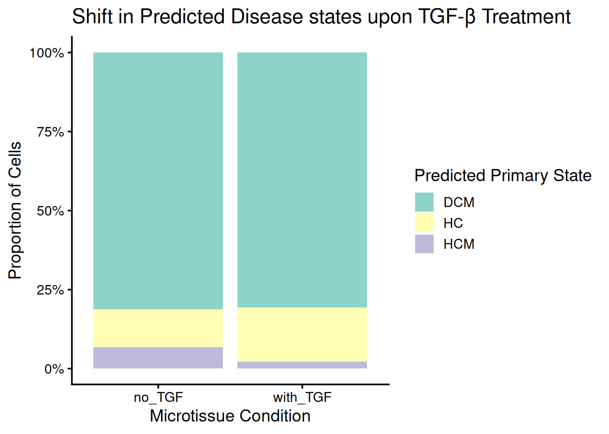
library(pheatmap)
# Select all prediction score columns
score_cols <- grep("^prediction\\.score\\.", colnames(query_obj@meta.data), value = TRUE)
score_cols <- setdiff(score_cols, "prediction.score.max") # exclude max summary column
# Calculate average score per condition
mean_scores <- query_obj@meta.data %>%
group_by(condition) %>%
summarise(across(all_of(score_cols), mean)) %>%
tibble::column_to_rownames("condition")
# Clean column names for readability
colnames(mean_scores) <- gsub("prediction\\.score\\.", "", colnames(mean_scores))
# Plot Heatmap
pheatmap(
t(mean_scores),
cluster_rows = TRUE,
cluster_cols = FALSE,
display_numbers = TRUE,
number_format = "%.3f",
color = colorRampPalette(c("white", "orange", "darkred"))(50),
main = "Mean State Assignment Probabilities by Condition"
)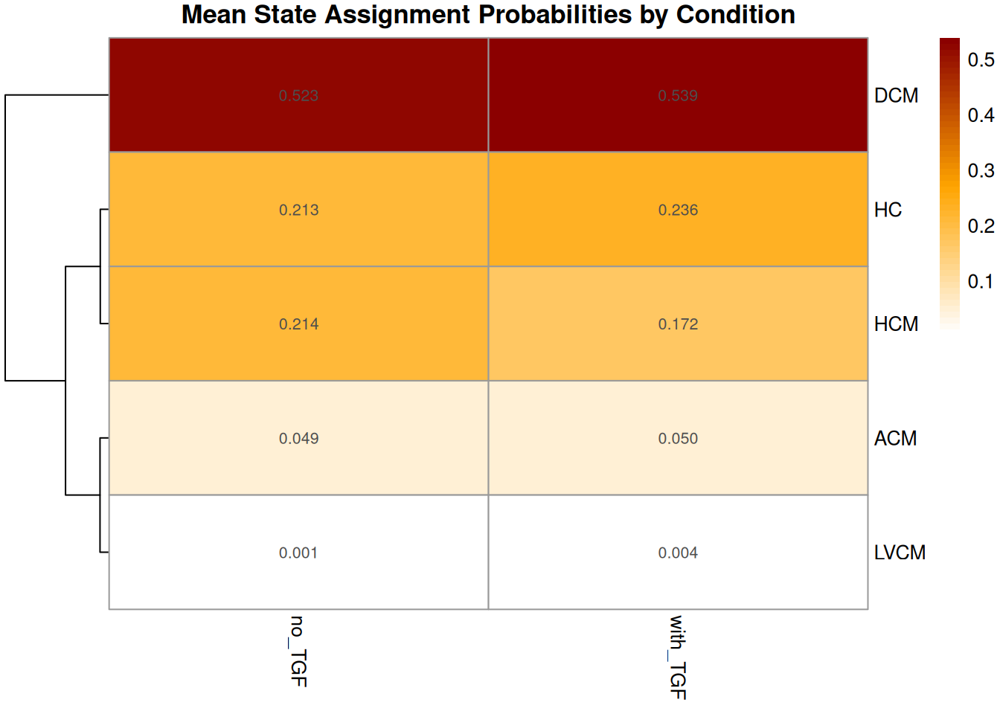
Anchor visualizations - per cellstate
# Subset the merged object into Reference (Primary Tissue) and Query (Microtissue)
ref_obj <- subset(macrophage_merged, subset = Dataset != "MT_Data")
query_obj <- subset(macrophage_merged, subset = Dataset == "MT_Data")
# Ensure SCT assay and Variable Features are set on Reference
DefaultAssay(ref_obj) <- "SCT"
ref_obj <- RunPCA(ref_obj, verbose = FALSE)
# Find Transfer Anchors between Primary Heart Reference and Microtissue Query
anchors <- FindTransferAnchors(
reference = ref_obj,
query = query_obj,
normalization.method = "SCT",
reference.reduction = "pca",
dims = 1:15
)[1] "Given reference assay has multiple sct models, selecting model with most cells for finding transfer anchors"Selected the SCT model fitted on the most cells.Projecting cell embeddingsFinding neighborhoodsFinding anchors Found 2047 anchors# Transfer Primary Condition labels onto Microtissue
predictions <- TransferData(
anchorset = anchors,
refdata = ref_obj$cell_statesL2,
dims = 1:15
)Finding integration vectorsFinding integration vector weightsPredicting cell labels# Add predicted labels and prediction scores to Query metadata
query_obj <- AddMetaData(query_obj, metadata = predictions)
# Evaluate prediction scores across TGF-beta conditions
table(query_obj$condition, query_obj$predicted.id)
Macrophage_TREM2_Phagocytic Monocyte_Inflammatory_Intermediate
no_TGF 623 2
with_TGF 432 1
Other_Immune_NonMyeloid unknown
no_TGF 11 26
with_TGF 6 25# Calculate percentage of each predicted state per condition
prop_df <- query_obj@meta.data %>%
group_by(condition, predicted.id) %>%
summarise(count = n(), .groups = "drop") %>%
group_by(condition) %>%
mutate(percentage = (count / sum(count)) * 100)
# Stacked Bar Plot
ggplot(prop_df, aes(x = condition, y = percentage, fill = predicted.id)) +
geom_bar(stat = "identity", position = "fill") +
scale_y_continuous(labels = scales::percent) +
scale_fill_brewer(palette = "Set3") +
theme_classic(base_size = 14) +
labs(
title = "Shift in Predicted Primary Cell States upon TGF-β Treatment",
x = "Microtissue Condition",
y = "Proportion of Cells",
fill = "Predicted Primary State"
)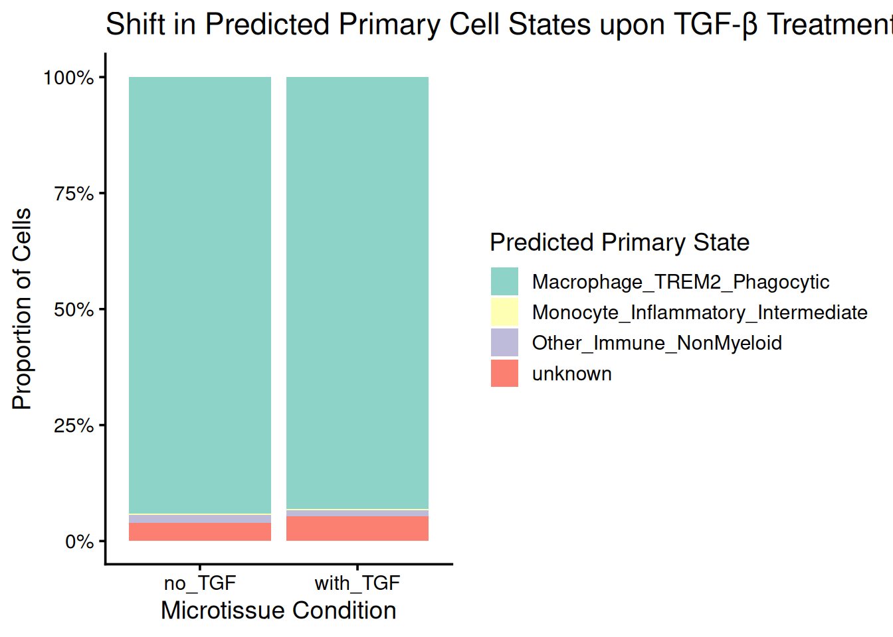
# Select all prediction score columns
score_cols <- grep("^prediction\\.score\\.", colnames(query_obj@meta.data), value = TRUE)
score_cols <- setdiff(score_cols, "prediction.score.max") # exclude max summary column
# Calculate average score per condition
mean_scores <- query_obj@meta.data %>%
group_by(condition) %>%
summarise(across(all_of(score_cols), mean)) %>%
tibble::column_to_rownames("condition")
# Clean column names for readability
colnames(mean_scores) <- gsub("prediction\\.score\\.", "", colnames(mean_scores))
# Keep only scores corresponding to assigned cell states
active_scores <- mean_scores[, unique(query_obj$predicted.id)]
pheatmap(
t(active_scores),
cluster_rows = TRUE,
cluster_cols = FALSE,
display_numbers = TRUE,
number_format = "%.3f",
color = colorRampPalette(c("white", "orange", "darkred"))(50),
main = "Mean Assignment Probabilities (Active Predicted States)"
)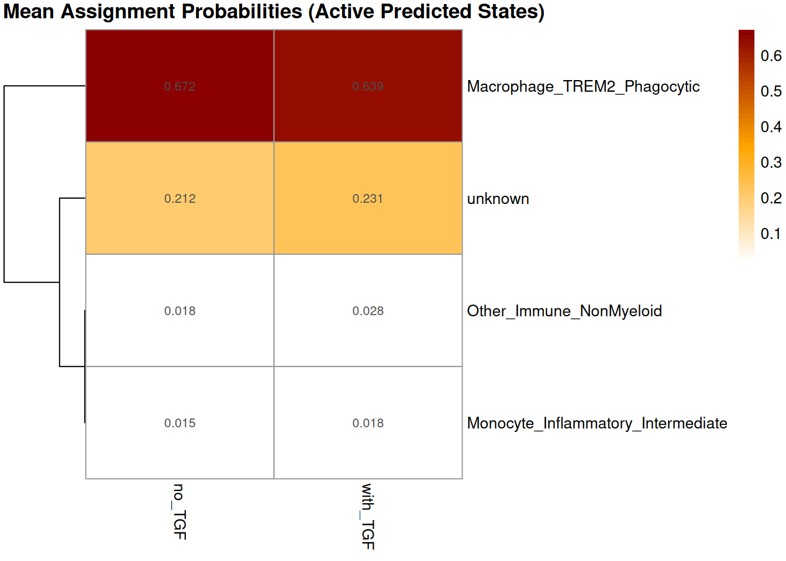
sessionInfo()R version 4.5.2 (2025-10-31)
Platform: x86_64-pc-linux-gnu
Running under: Ubuntu 24.04.3 LTS
Matrix products: default
BLAS: /usr/lib/x86_64-linux-gnu/openblas-pthread/libblas.so.3
LAPACK: /usr/lib/x86_64-linux-gnu/openblas-pthread/libopenblasp-r0.3.26.so; LAPACK version 3.12.0
locale:
[1] LC_CTYPE=en_US.UTF-8 LC_NUMERIC=C
[3] LC_TIME=en_US.UTF-8 LC_COLLATE=en_US.UTF-8
[5] LC_MONETARY=en_US.UTF-8 LC_MESSAGES=en_US.UTF-8
[7] LC_PAPER=en_US.UTF-8 LC_NAME=C
[9] LC_ADDRESS=C LC_TELEPHONE=C
[11] LC_MEASUREMENT=en_US.UTF-8 LC_IDENTIFICATION=C
time zone: Etc/UTC
tzcode source: system (glibc)
attached base packages:
[1] grid stats4 stats graphics grDevices utils datasets
[8] methods base
other attached packages:
[1] future_1.75.0 pheatmap_1.0.13
[3] corrplot_0.95 FNN_1.1.4.1
[5] ggpubr_0.6.3 circlize_0.4.17
[7] lubridate_1.9.4 stringr_1.5.2
[9] purrr_1.2.2 tidyr_1.3.1
[11] tidyverse_2.0.0 ComplexHeatmap_2.26.1
[13] ggrain_0.1.2 enrichplot_1.30.5
[15] ggforce_0.5.0 DT_0.34.0
[17] UCell_2.14.0 assertthat_0.2.1
[19] SCpubr_3.0.1 forcats_1.0.1
[21] fgsea_1.36.2 DOSE_4.4.0
[23] GO.db_3.22.0 org.Hs.eg.db_3.22.0
[25] AnnotationDbi_1.72.0 clusterProfiler_4.18.4
[27] ggtangle_0.1.2 ggarchery_0.4.4
[29] EnhancedVolcano_1.28.2 tibble_3.3.0
[31] MAST_1.36.0 speckle_1.10.0
[33] harmony_1.2.4 Rcpp_1.1.0
[35] clustree_0.5.1 ggraph_2.2.2
[37] scDblFinder_1.24.10 SingleCellExperiment_1.32.0
[39] SummarizedExperiment_1.40.0 Biobase_2.70.0
[41] GenomicRanges_1.62.1 Seqinfo_1.0.0
[43] IRanges_2.44.0 S4Vectors_0.48.0
[45] BiocGenerics_0.56.0 generics_0.1.4
[47] MatrixGenerics_1.22.0 matrixStats_1.5.0
[49] ggrepel_0.9.6 cowplot_1.2.0
[51] patchwork_1.3.2 scCustomize_3.2.4
[53] hdf5r_1.3.12 Seurat_5.4.0
[55] SeuratObject_5.3.0 sp_2.2-0
[57] ggplot2_4.0.0 dplyr_1.1.4
[59] readr_2.1.5 workflowr_1.7.2
loaded via a namespace (and not attached):
[1] R.methodsS3_1.8.2 ggpp_0.6.1 goftest_1.2-3
[4] Biostrings_2.78.0 vctrs_0.7.3 spatstat.random_3.4-2
[7] digest_0.6.37 png_0.1-8 shape_1.4.6.1
[10] git2r_0.36.2 deldir_2.0-4 parallelly_1.46.1
[13] fontLiberation_0.1.0 MASS_7.3-65 reshape2_1.4.5
[16] foreach_1.5.2 httpuv_1.6.16 qvalue_2.42.0
[19] withr_3.0.2 ggrastr_1.0.2 xfun_0.58
[22] ggfun_0.2.0 survival_3.8-3 memoise_2.0.1
[25] ggbeeswarm_0.7.3 gson_0.1.0 janitor_2.2.1
[28] systemfonts_1.3.1 tidytree_0.4.7 zoo_1.8-14
[31] GlobalOptions_0.1.3 pbapply_1.7-4 R.oo_1.27.1
[34] Formula_1.2-5 rematch2_2.1.2 KEGGREST_1.50.0
[37] promises_1.4.0 otel_0.2.0 httr_1.4.7
[40] rstatix_0.7.3 restfulr_0.0.16 globals_0.19.1
[43] fitdistrplus_1.2-5 ps_1.9.1 rstudioapi_0.17.1
[46] UCSC.utils_1.6.1 miniUI_0.1.2 processx_3.8.6
[49] curl_7.0.0 ScaledMatrix_1.19.0 polyclip_1.10-7
[52] SparseArray_1.10.8 doParallel_1.0.17 xtable_1.8-4
[55] evaluate_1.0.5 S4Arrays_1.10.1 hms_1.1.4
[58] irlba_2.3.5.1 colorspace_2.1-2 polynom_1.4-1
[61] ROCR_1.0-12 reticulate_1.44.1 spatstat.data_3.1-9
[64] magrittr_2.0.4 lmtest_0.9-40 snakecase_0.11.1
[67] ggtree_4.0.4 later_1.4.4 viridis_0.6.5
[70] lattice_0.22-7 spatstat.geom_3.6-0 future.apply_1.20.1
[73] getPass_0.2-4 scattermore_1.2 XML_3.99-0.19
[76] scuttle_1.21.0 RcppAnnoy_0.0.23 pillar_1.11.1
[79] nlme_3.1-168 iterators_1.0.14 compiler_4.5.2
[82] beachmat_2.26.0 RSpectra_0.16-2 stringi_1.8.7
[85] tensor_1.5.1 GenomicAlignments_1.46.0 plyr_1.8.9
[88] crayon_1.5.3 abind_1.4-8 BiocIO_1.20.0
[91] scater_1.38.0 gridGraphics_0.5-1 locfit_1.5-9.12
[94] graphlayouts_1.2.2 bit_4.6.0 fastmatch_1.1-8
[97] whisker_0.4.1 codetools_0.2-20 BiocSingular_1.27.1
[100] bslib_0.9.0 paletteer_1.7.0 GetoptLong_1.1.0
[103] plotly_4.11.0 mime_0.13 splines_4.5.2
[106] fastDummies_1.7.5 tidydr_0.0.6 utf8_1.2.6
[109] knitr_1.50 blob_1.2.4 clue_0.3-67
[112] fs_2.1.0 listenv_0.10.0 ggsignif_0.6.4
[115] ggplotify_0.1.3 Matrix_1.7-4 callr_3.7.6
[118] statmod_1.5.1 tzdb_0.5.0 tweenr_2.0.3
[121] pkgconfig_2.0.3 tools_4.5.2 cachem_1.1.0
[124] cigarillo_1.0.0 RSQLite_2.4.3 viridisLite_0.4.2
[127] DBI_1.2.3 fastmap_1.2.0 rmarkdown_2.30
[130] scales_1.4.0 ica_1.0-3 Rsamtools_2.26.0
[133] broom_1.0.10 sass_0.4.10 ggprism_1.0.7
[136] dotCall64_1.2 carData_3.0-6 RANN_2.6.2
[139] farver_2.1.2 scatterpie_0.2.6 tidygraph_1.3.1
[142] yaml_2.3.10 rtracklayer_1.70.1 cli_3.6.5
[145] lifecycle_1.0.5 uwot_0.2.4 presto_1.0.0
[148] backports_1.5.0 bluster_1.20.0 BiocParallel_1.44.0
[151] timechange_0.3.0 gtable_0.3.6 rjson_0.2.23
[154] ggridges_0.5.7 progressr_0.18.0 ape_5.8-1
[157] parallel_4.5.2 limma_3.67.0 jsonlite_2.0.0
[160] edgeR_4.9.2 RcppHNSW_0.6.0 bitops_1.0-9
[163] bit64_4.6.0-1 xgboost_3.2.0.1 Rtsne_0.17
[166] yulab.utils_0.2.3 spatstat.utils_3.2-0 BiocNeighbors_2.4.0
[169] jquerylib_0.1.4 metapod_1.19.1 GOSemSim_2.36.0
[172] dqrng_0.4.1 spatstat.univar_3.1-4 R.utils_2.13.0
[175] lazyeval_0.2.2 shiny_1.11.1 htmltools_0.5.8.1
[178] sctransform_0.4.3 rappdirs_0.3.3 glue_1.8.0
[181] spam_2.11-3 XVector_0.50.0 gdtools_0.4.4
[184] RCurl_1.98-1.17 treeio_1.34.0 rprojroot_2.1.1
[187] scran_1.38.0 gridExtra_2.3 igraph_2.2.1
[190] R6_2.6.1 ggiraph_0.9.3 labeling_0.4.3
[193] cluster_2.1.8.1 aplot_0.2.9 GenomeInfoDb_1.46.2
[196] mcprogress_0.1.1 DelayedArray_0.36.0 tidyselect_1.2.1
[199] vipor_0.4.7 car_3.1-5 fontBitstreamVera_0.1.1
[202] rsvd_1.0.5 KernSmooth_2.23-26 S7_0.2.0
[205] fontquiver_0.2.1 data.table_1.17.8 htmlwidgets_1.6.4
[208] RColorBrewer_1.1-3 rlang_1.3.0 spatstat.sparse_3.1-0
[211] spatstat.explore_3.5-3 ggnewscale_0.5.2 beeswarm_0.4.0